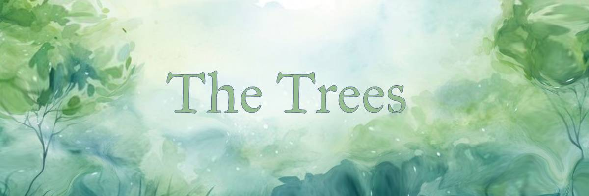
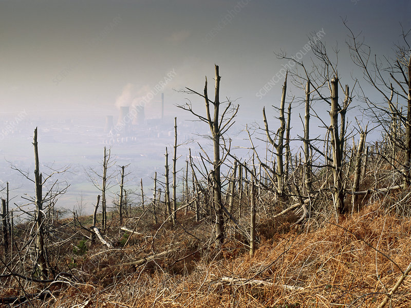

There are two main types of things that harm the trees:
Air pollution,
And deforestation.
Air pollution is one of the most well known types of pollution as it not only impacts humans and animals, but it also affects plant life. Air pollution can cause trees leaves to yellow and damage the leaves, reducing the effectiveness of photosynthesis and making it harder to produce oxygen for animals. The smoke and fog created by factories or car exhausts can make trees grow slower, or not grow at all and end up not surviving.
Deforestation is when you remove trees for a large amount of area. It's rather obvious on why this affects the environment, but you most likely do not know every factor.
Over 70% of animals and plants live in the forest, so removing the trees that they call home rips them out of their habitat and can cause them to die as stripping the trees away creates a drastic new climate for the animal and plantlife. Not only that, but greenhouse gases will be increased due to the lack of trees. Trees help reduce greenhouse gases by absorbing it and turning them into oxygen.

Walk, take the bike or go on a bus instead of using cars. if you had to use cars, try to carpool/take the car with other people as to lessen the use of cars.
Conserve energy - by turning off the lights and buying low energy appliances,
Plant some trees, as to bring back the stolen trees,
Increase awareness about it, such as telling family and friends, or posting about deforestation on social media,
Use eco-friendly products that are environmentally certified and safe.